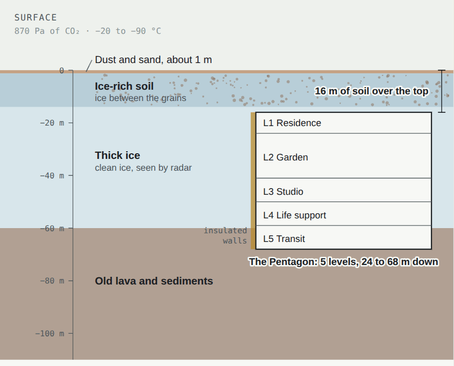

Resources
What Mars offers the people who would live there: water as ice, carbon dioxide, nitrogen and argon in the air, a soil of basalt, iron, sulfur and salts, sunlight, and gravity weak enough to make leaving cheap. Everything heavy and simple can be made from them; only machines, electronics and medicines must come from Earth.
WaterIce everywhere, liquid nowhere
The polar caps hold about 3 million km³ of water ice, measured by radar from orbit: enough to cover the whole planet about 20 m deep.
Buried ice lies under much of the middle latitudes too, out of sight under a layer of dust. In 2008 the Phoenix lander scraped a trench at 68° N and found ice a few centimetres down; it turned to vapour in the sunlight over a few days. In December 2021 a meteorite dug a crater in Amazonis Planitia, at 35° N, and threw out blocks of ice, the closest to the equator that ice has been seen on Mars.
Arcadia Planitia is one of the richest places: radar from orbit and the terraced walls of fresh craters show clean ice tens of metres thick across a large area, starting close to the surface. NASA's Subsurface Water Ice Mapping project names the northern plains around it among the best places for people to find water.
In minerals: clays and salts such as gypsum hold water in their crystals, which can be baked out. In the air there is almost none: about 0.02% water vapour.

The airThin, but useful
Carbon dioxide, 95% of the air, can be split into oxygen and carbon monoxide: the MOXIE experiment on Perseverance did it on Mars from 2021 to 2023. Its carbon, joined to hydrogen from water, makes methane for rocket fuel, and in time plastics.
Nitrogen and argon, 4.5% of the air together, can be separated out to dilute the oxygen inside a building, as nitrogen does in Earth's air. Plants need nitrogen too, and Curiosity has found nitrates, a form plants can use, in Mars soil and rock.
Soil and rockBuilding material, metals and salts
Basalt. The soil is crushed volcanic rock, which can be heated into a hard ceramic, melted and cast, or printed into walls: see construction. Simply piled on top, it is the best shield against radiation.
Iron. The red is iron oxide, rust, and iron oxides make up a large part of the soil. Iron can be freed from them with hydrogen or carbon monoxide, both of which can be made on Mars. The rovers have also found iron-nickel meteorites lying on the ground, almost pure metal.
Sulfur and salts. Sulfates are common; melted sulfur mixed with soil makes a concrete that needs no water. Perchlorate salts, about half a percent of the soil at the Phoenix site, are harmful to people and must be washed out, though they give off oxygen when heated.
Clays, which form only in water, are found in many old rocks, and are another source of water when heated.
Sunlight and gravityWeaker light, and an easy way out
Sunlight is 43% of Earth's on average above the air, less through dust, and none in a night of about 12 hours. Solar panels work, but a global dust storm can cut them to a few percent for weeks: see energy.
Gravity is 0.38 of Earth's, and the speed needed to leave Mars for good is 5.0 km/s, under half of Earth's 11.2. A rocket leaving Mars needs much less fuel than one leaving Earth, all the more if that fuel is made on Mars.
How they are usedFrom resource to supply
SourcesWhere the numbers come from
- J. J. Plaut and others (2007), Subsurface radar sounding of the south polar layered deposits of Mars. Science 316, 92. doi:10.1126/science.1139672; M. T. Zuber and others (1998), the north polar region from the Mars Orbiter Laser Altimeter. Science 282, 2053. doi:10.1126/science.282.5396.2053
- P. H. Smith and others (2009), H₂O at the Phoenix landing site. Science 325, 58. doi:10.1126/science.1172339; M. H. Hecht and others (2009), Detection of perchlorate and the soluble chemistry of martian soil at the Phoenix lander site. Science 325, 64. doi:10.1126/science.1172466
- A. M. Bramson and others (2015), Widespread excess ice in Arcadia Planitia, Mars. Geophysical Research Letters 42, 6566. doi:10.1002/2015GL064844; G. A. Morgan and others (2021), Availability of subsurface water-ice resources in the northern mid-latitudes of Mars. Nature Astronomy 5, 230. doi:10.1038/s41550-020-01290-z
- L. V. Posiolova and others (2022), Largest recent impact craters on Mars: orbital imaging and surface seismic co-investigation. Science 378, 412. doi:10.1126/science.abq7704
- M. Hecht and others (2021), Mars Oxygen ISRU Experiment (MOXIE). Space Science Reviews 217, 9. doi:10.1007/s11214-020-00782-8
- J. C. Stern and others (2015), Evidence for indigenous nitrogen in sedimentary and aeolian deposits from the Curiosity rover investigations at Gale crater, Mars. PNAS 112, 4245. doi:10.1073/pnas.1420932112
- NASA Goddard Space Flight Center, Mars Fact Sheet: the air, sunlight, gravity and escape speed. NASA/JPL (2005): Opportunity finds an iron meteorite on Mars.